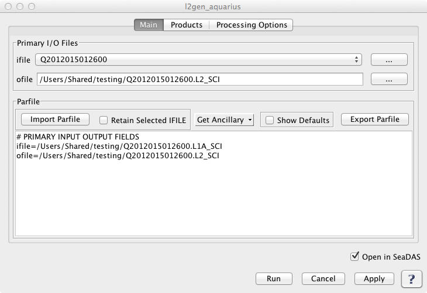

| l2gen_aquarius | |
Creates a Level 2 file from an input Level 1 file.
Tools -> OCSSW Processing -> l2gen_aquarius
All key documentation for the the Aquarius products supported by SeaDAS including format documents, User Guide,
ATBD's and Data Quality Analysis report
can be found at:
ftp://podaac-ftp.jpl.nasa.gov/allData/aquarius/docs/v2/
Aquarius v2.0 digital data sets are archived and distributed via the JPL/PO.DAAC's public ftp site:
ftp://podaac-ftp.jpl.nasa.gov/allData/aquarius/
and via the public data portal:
https://podaac.jpl.nasa.gov/datasetlist?search=aquarius
https://aquarius.nasa.gov
https://podaac.jpl.nasa.gov/aquarius
For the command line version of help run l2gen_aquarius -help
The l2gen_aquarius GUI is dynamically created based on the selected IFILE. Once the IFILE is specified, l2gen_aquarius is run in the background in a special mode in order to obtain and populate all the parameters and defaults for l2gen_aquarius GUI. This means that if a new version of l2gen_aquarius comes out, with new parameters, defaults, etc., your current version of SeaDAS will automatically support these parameters. Note that because of this l2gen_aquarius dependency on the building of the GUI, SeaDAS 7 requires l2gen_aquarius version 2.02 or later.
All l2gen_aquarius parameters are contained within a series of categorized tabs:
Non-Defaults Selected Indicator (*)
When a parameter is chosen to be
a non-default value, that parameter will show up in the parfile textarea of the MAIN tab.
As an aid to help direct
the user to tabs containing at least one parameter set to a non-default value, an asterix
(*) will appear at the top
of the tab. Also within the tab, an asterix will appear next to each parameter which is a
non-default value.
THE MAIN TAB |
|
Selecting the IFILE Once this IFILE has been specified, the mission and data level are obtained from this file. If the IFILE data level matches the expected input data level of l2gen_aquarius, the GUI will then use this file to run l2gen_aquarius in the background in order to obtain and populate all the parameters and defaults of l2gen_aquarius GUI. One thing very important to note is that since this GUI is built from the IFILE, a subsequent selection of a different IFILE will cause the GUI to be rebuilt with all the fields set to the defaults. If you have parameters already specified and wish to save these, then the best route would be to save them in a parfile, select a new IFILE, then reload the parfile.
Selecting the OFILE
Get Ancillary Files
Show Defaults
Parfile Textarea It's useful to note that when you are editing text in the parfile textarea you can click "Apply". This will cause the text to update all the GUI parameters. The parfile textarea will automatically be reformatted in a consistent way, so be aware that the order of your hand-entered parameters may change due to this. Clicking on another field or another tab will also have the same effect as clicking the "Apply" button. To reset all parameters within a given tab to the default, click the button at the bottom of the panel. To reset all parameters within all tabs, no button as of yet exists but you can simply delete the entire parfile textarea in the main tab, and this will restore everything to default. |
|
 |
THE PRODUCTS TAB |
|
The l2gen_aquarius product parameter L2PROD is initially set to the default value. At any time L2PROD can be restored to the default value by clicking 'Restore Defaults' at the bottom of this tab. L2PROD can be specified in a multitude of ways. Note that a change within any of one these product specifier controls will automatically update the others.
Product Selector
Selected Products Textarea |
|
|
THE PROCESSING OPTIONS TAB |
|
|
l2gen_aquarius 2.02 (Feb 28 2013 13:55:30)
par (ifile) = input parameter file
ifile (ifile) = input L1 file name
ofile (ofile) = output L2 file name,
l2prod (string) = L2 products to be included in ofile
l2prod = L2 products to be included in ofile
yancfile1 (ifile) = radiometer ancillary file 1
yancfile2 (ifile) = radiometer ancillary file 2
yancfile3 (ifile) = radiometer ancillary file 3
xrayfile1 (ifile) = radiometer xray ancillary file 1
xrayfile2 (ifile) = radiometer xray ancillary file 2